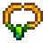

Ornate Necklace
Jump to navigation
Jump to search
| Ornate Necklace | |
|  | |
| A fancy necklace found in the water outside of the bath house. It's still wet... | |
| Information | |
| Source | Secret Note #25 |
| Sell Price | Cannot be sold |
The Ornate Necklace is a special item that is unlocked after reading Secret Note #25. To find it, fish in the water outside the Spa during any season except Winter.
To give the Ornate Necklace, place it in the inventory. It does not need to be held as the game automatically tries to give it to any NPC that is spoken to thereafter. However, it can be received only by Caroline or Abigail. Trying to give it to anyone else fails, and results in a dialogue saying "Wrong Person". Make sure to speak first to the intended recipient, since transfer is automatic.
Giving the Ornate Necklace to Caroline awards 50 Friendship points with her. Giving the Ornate Necklace to Abigail awards 100 Friendship points with her.